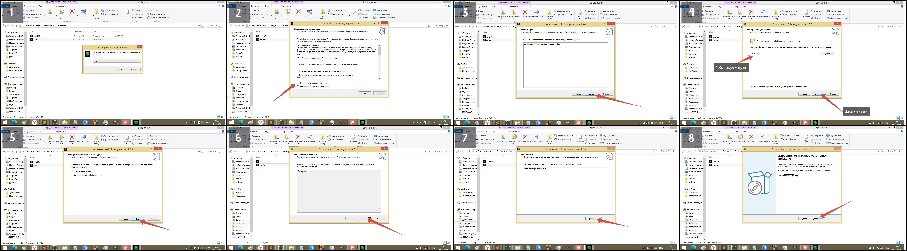
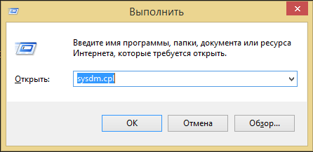
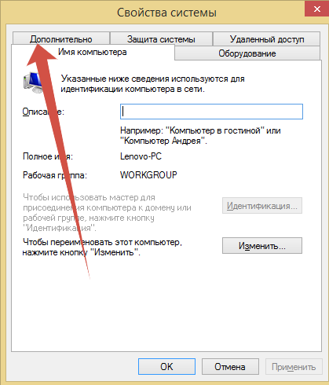
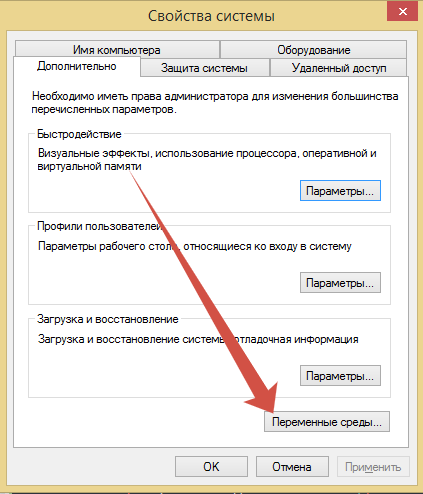
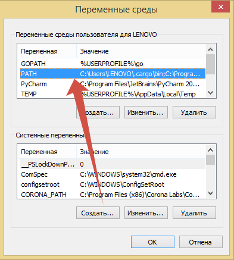
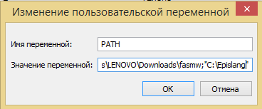

EpisLang — Гайд по установке
Шаги 1-8

Шаг 9
Нажмите Win+R
Шаг 10
в появившемся окне введите "sysdm.cpl"

Шаги 11-14
Дополнительно

Переменные среды

Заходим в PATH

Вставляем скопированный путь
